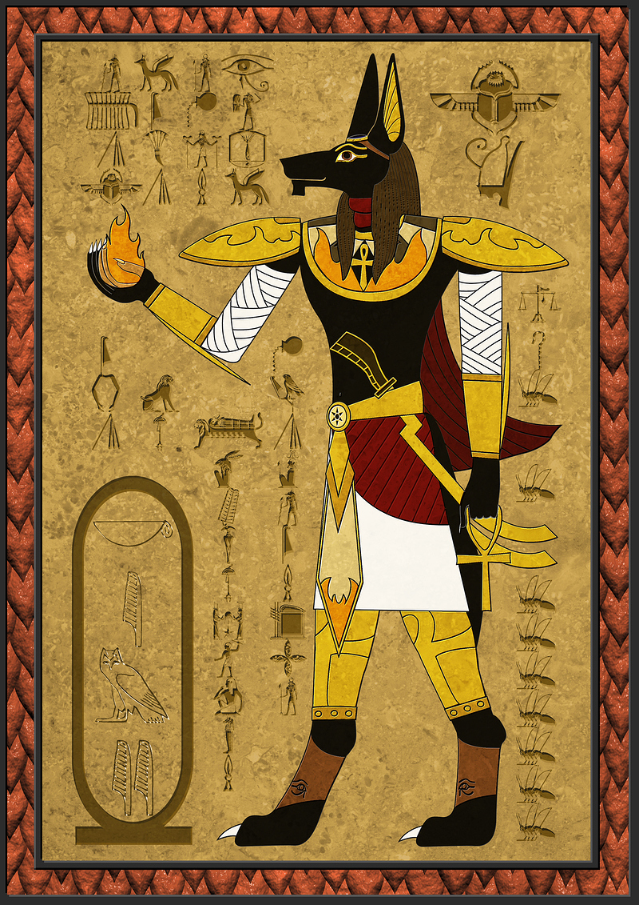

ИНТЕРЕСНЫЕ ФАКТЫ О ДРЕВНЕМ ЕГИПТЕ
- Когда египтяне строили свои пирамиды, по Земле ещё бродили мамонты. Они вымерли около 4 тысяч лет назад, а древнеегипетское царство возникло более 6 тысяч лет назад.
- Окончательно Древний Египет пал около 1300 лет назад, когда его завоевали арабы.
- Косметика в Древнем Египте была популярна не только среди женщин, но и среди мужчин. Впрочем, основным её предназначением была защита кожи от солнечных лучей, а не украшение лица. Кстати, у современных египтян косметика тоже популярна .
- Дети до достижения подросткового возраста в Древнем Египте обычно не носили одежды, а волосы им сбривали, оставляя лишь косичку, чтобы уберечь от вшей и блох.

- Женщины в Древнем Египте обладали теми же юридическими правами, что и мужчины. Они обычно занимались домашним хозяйством в силу традиций, но законы наделяли их равноправием.
- В Древнем Египте впервые в мировой истории были придуманы брачные контракты, в которых указывалось, как будет делиться имущество между супругами в случае развода.
- Всё существование Древнего Египта было привязано к реке Нил, вокруг которой и возникла эта цивилизация .
- Изучением истории и культуры занимается отдельная наука, египтология.
- Знаменитые египетские пирамиды возводили не невольники, а вполне профессиональные наёмные работники.
- В Древнем Египте подушки набивали камнями вместо перьев.
- Слово «фараон» с древнеегипетского переводится, как «большой дом».
- Самая известная правительница Древнего Египта, царица Клеопатра, по происхождению была македонянкой — гречанкой из Македонии .
- Знатные граждане Древнего Египта всегда скрывали свои волосы от посторонних, переняв эту моду у фараонов.
- Древние египтяне высоко ценили настольные игры. Некоторые из них дошли и до наших дней.
- Бог Осирис изображался египтянами бородатым, поэтому фараоны часто носили накладные бороды, сделанные из золота.
- Правители Древнего Египта нередко вступали в браки с братьями и сёстрами, чтобы уменьшить число претендентов на престол.
- В древние времена египтяне-мужчины носили юбки, так как штаны в жарком климате распространения не получили. Женщины обычно облачались в платья.
- Первая в мире полиция появилась именно в Древнем Египте. Служащие следили за порядком, а в качестве патрульных животных использовали дрессированных собак и обезьян.
- Древние египтяне догадывались о пользе пенициллина в борьбе с инфекциями за 4000 лет до изобретения антибиотиков. В качестве лекарства они использовали некоторые виды плесени.
- Первой возведённой в Древнем Египте является ступенчатая пирамида Джосера, построенная около 4600 лет назад, а самой известной — пирамида Хеопса.
- Колёса со спицами были изобретены именно египтянами.
- Впервые в истории носить обручальные кольца на безымянном пальце стали жители Древнего Египта. Позднее этот обычай у них переняли римляне и греки.
- Родословную древние египтяне вели по материнской линии.
- В Древнем Египте считалось кощунственным заходить в дом, не разуваясь, причём даже в свой собственный.
- Египтяне активно использовали почтовых голубей для доставки корреспонденции.

- Самое древнее в истории было составлено именно в Древнем Египте, более 4600 лет назад. Его автором был один из сыновей фараона Хафре.
- Египтяне никогда не отмечали дней рождения.
- В Древнем Египте была очень хорошо развита медицина, особенно хирургия. При этом врачей общего профиля не было — у каждого из них была своя узкая специализация.
- Знаменитая Александрийская библиотека была местом, где учились самые знаменитые учёные — Архимед, Аристотель, Птолемей, Евклид . К сожалению, она была сожжена после арабского завоевания Египта.
- В ходу у древних египтян было сразу три календаря — лунный, астрономический и земледельческий, основанный на регулярных разливах Нила.
- В Древнем Египте был очень широко распространён хлеб.
- Именно египтяне изобрели такой повсеместно распространённый напиток, как пиво.
- Письменность с помощью иероглифов в Древнем Египте освоили более 5000 лет назад.
- В Древнем Египте были изобретены бетон, обувь на каблуках, расчёски, мыло и зубной порошок.
- Самым плодовитым древнеегипетским фараоном был Рамзес II. Прожив более 90 лет, из них более 70 он провёл у власти, оставив после себя сто с лишним детей.
- Из всех оригинальных Семи чудес света лишь египетские пирамиды сохранились до наших дней.
- Дольше всех из фараонов у власти оставался Пепи II, правивший царством целых 88 лет.